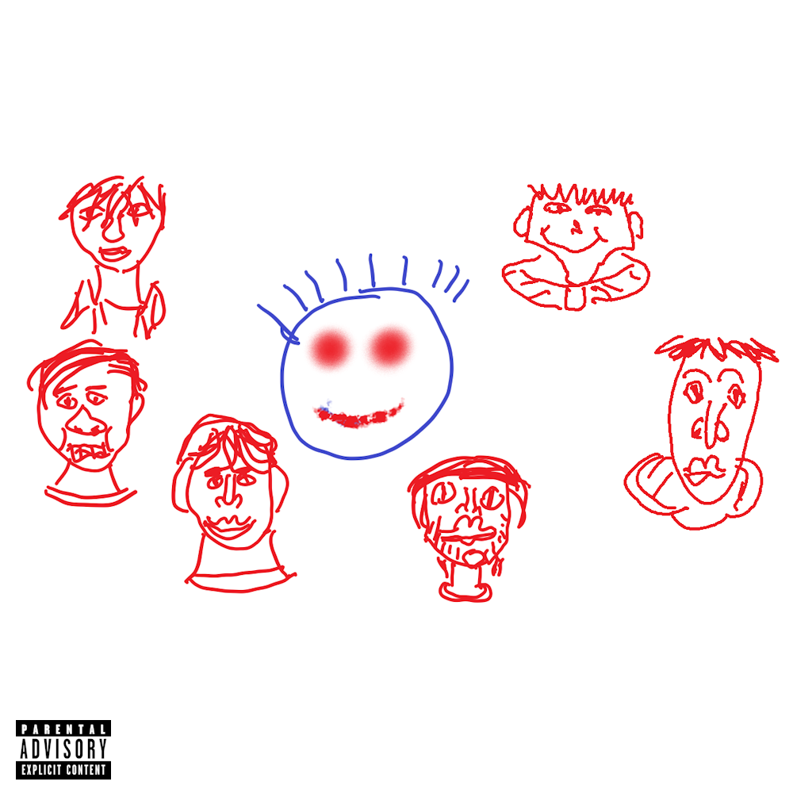
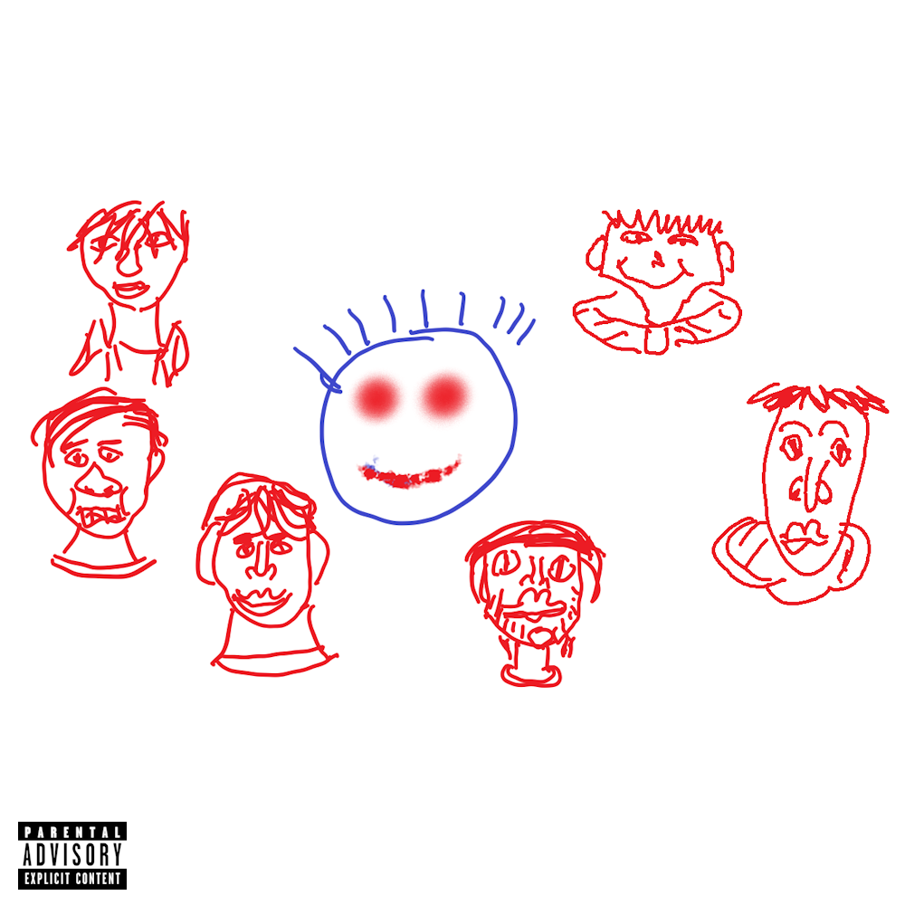
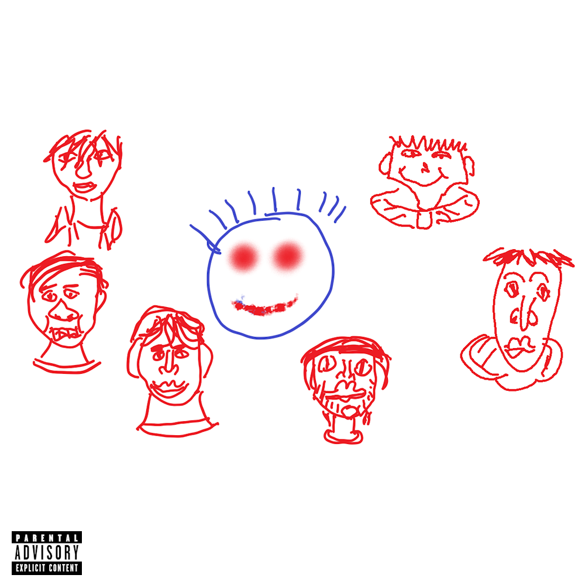
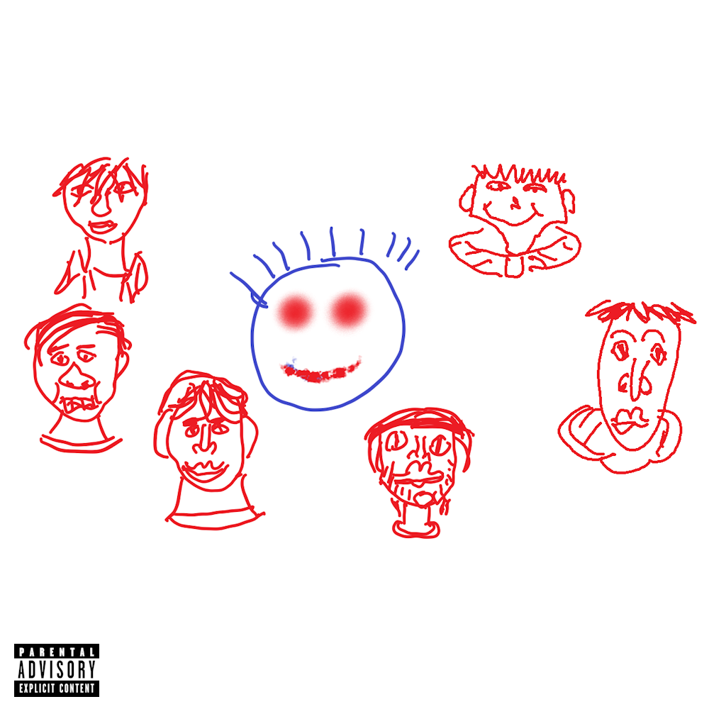

The greatest band in the world
Luca Stev’s Loyalists aren’t just fans— we're a passionate family united by our admiration for Luca Stev, the greatest celebrity ever and the ultimate symbol of hope.
We channel all of our passion and energy into celebrating everything Luca represents: inspiration, positivity, and resilience.
To us, Luca Stev isn’t just a figure on a screen or stage—he’s a beacon of light in a world that sometimes feels shrouded in despair.
With every gathering and tribute, Luca Stev’s Loyalists prove that our bond goes beyond fandom—it’s a movement built on love, loyalty, and the belief that with Luca leading the way, anything is possible.
This is some paragraph text.
This is the greatest band in the world. If you disagree, the door's that way bucko.
The Previous Album by Luca Stev's Loyalists
Luca Stev's Loyalists return with their fifteenth studio album, Save The Planet So Luca Stev Gets To Live.
"This album honestly might just be the most painful auditory experience since dial-up. - Review by Pitchfork (Rating: 0.3/10)
"If saving the planet means having to endure this album again, maybe it's time to let nature take its course." - Review by The Guardian (Rating: 1/5)
Play Luca Stev's Jumping Game